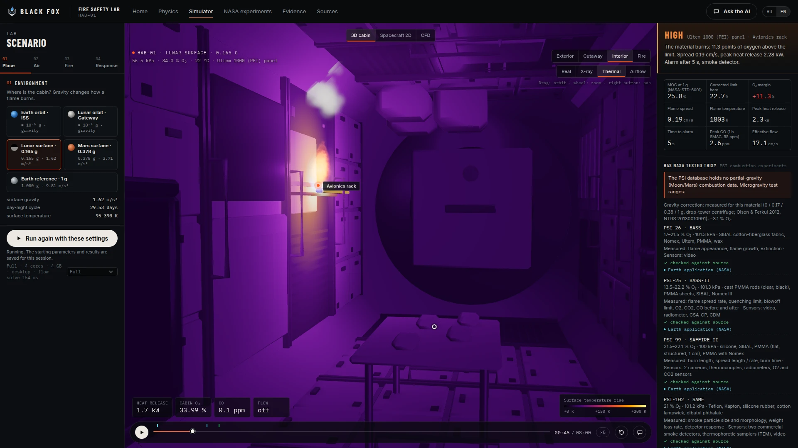
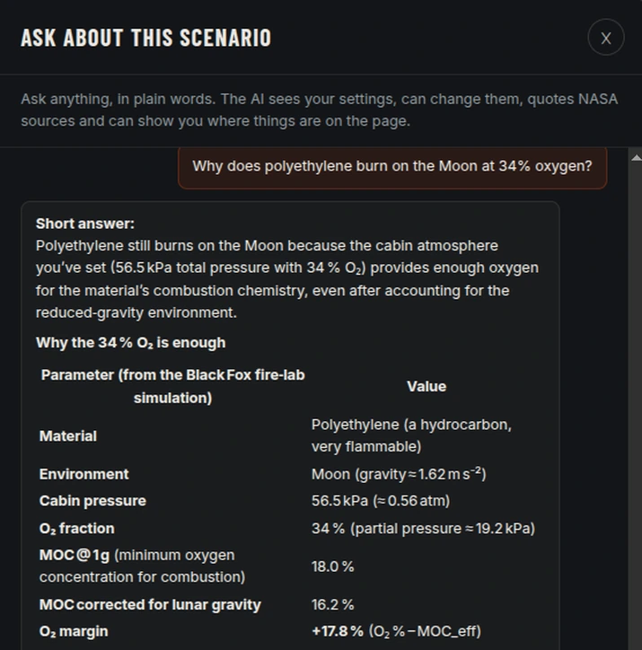

NASA Space Apps Challenge 2026
Flame in Freefall
See how fire behaves in aMoon or Mars cabin.
34 % O2
planned Moon–Mars cabin, 56.5 kPa
−4 % O2
largest burn-limit drop in 0 g
24 PSI investigations · 15 mapped envelopes

NASA's eight considerations
